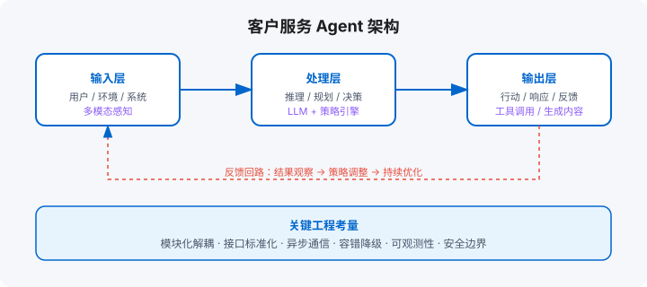

场景三：客户服务 Agent
多轮对话 / 工单系统 / 知识库检索 / 合规话术与人工接管
学习目标
- 设计「Agent 优先、人工兜底」的分层服务架构
- 定义人工接管的触发条件与上下文传递规范
- 把合规审核做成流水线，而不是上线前补丁
章节地图：17.1 需求 → 17.2 工具 → 17.3 记忆 → 17.4 合规 → 17.5 人工接管设计 → 本章产出。

17.1 需求：多轮对话、工单系统、知识库检索
客户服务 Agent 是商业化最成熟的场景。用户诉求通常分三层：
- 即时问答：查物流、问政策、退款条件。知识库命中即可回复。
- 多轮澄清：用户描述模糊，Agent 需追问「请问订单号是多少？」「是商品问题还是物流问题？」。
- 工单流转：无法自动解决的问题，自动创建工单、分配客服、同步进度。
17.2 工具：CRM 查询、工单创建、邮件发送
客服 Agent 的核心工具：
- CRM 查询：拉取用户历史订单、投诉记录、会员等级。
- 工单系统：创建 / 查询 / 关闭工单，支持附件和内部备注。
- 邮件 / 短信：发送确认函、补偿方案、调查问卷。
- 知识库检索：向量搜索 + 关键词搜索混合，召回政策文档和 FAQ。
17.3 记忆：客户历史、偏好、投诉记录
客服 Agent 的记忆让服务「有连续性」：
- 客户画像：历史投诉次数、偏好的沟通渠道（电话 / 在线 / 邮件）、是否 VIP。
- 对话上下文：多轮对话中记住用户之前说过什么，避免重复询问。
- 情绪记忆：识别用户情绪（愤怒、焦虑、满意），调整回复语气和升级策略。
17.4 合规：话术审核、人工接管触发条件
客服直接面对用户，合规风险高：
- 话术审核：Agent 回复在发送前过规则 + 模型双重审核，禁止承诺赔偿额度、禁止泄露其他客户信息。
- 人工接管：用户说「人工客服」、情绪识别为愤怒、话题涉及法律纠纷时，立即转人工。
- 审计留痕：所有对话记录、工单操作、转人工原因必须可查。
17.5 HITL：人工接管的设计
客服 Agent 的目标不是「零人工」，而是「人工只接该接的」。触发条件分三类，全部显式配置：
| 触发类型 | 例子 | 设计要点 |
|---|---|---|
| 情绪信号 | 用户连续两次表达不满、要求投诉 | 检测到即转，不让 Agent 再「尝试一次」——每多一轮都在消耗信任 |
| 风险阈值 | 涉及退款金额超限、账号安全、法律责任表述 | 阈值写死在 Harness 层，不依赖模型判断 |
| 能力边界 | 知识库检索置信度低、用户问题超出业务范围 | 诚实说「这个我接不住，转人工」，优于编造 |
接管体验的关键是上下文交接：坐席打开对话时，应直接看到「用户摘要 + 已确认事实 + Agent 尝试过什么 + 失败在哪」，而不是从第一轮重读。这依赖第 3 章的记忆沉淀和第 10 章的轨迹回放——HITL 做得好不好，本质上是前面章节功底的集中检验。
另一种高级形态是坐席辅助（Agent 辅助人而不是替代人）：实时推荐回复、自动填单、话术合规检查。适合「信任建立期」——先让 Agent 在幕后提升人工效率，数据攒够了再前移交互界面。
动手实验
- 列出你的客服场景 TOP5 必须转人工的触发条件，逐条配置并测试。
- 设计转人工时的「交接卡」：包含哪些字段？找一位客服主管评审。
- 评估你的场景适合「Agent 前台」还是「坐席辅助」起步，写下判断依据。
本章产出：客户服务 Agent 的最小实现（双语言）
Python 版本
"""
客户服务 Agent 最小实现 —— Python
"""
from __future__ import annotations
from dataclasses import dataclass
from typing import Any
@dataclass
class CustomerContext:
user_id: str
name: str
vip: bool = False
complaint_count: int = 0
emotion: str = "neutral"
class CustomerServiceAgent:
def __init__(self):
self.kb = {"退款": "7 天无理由，原路退回。", "物流": "默认 3–5 个工作日送达。"}
self.escalation_keywords = ["人工", "投诉", "律师", "起诉"]
def retrieve(self, question: str) -> str:
for k, v in self.kb.items():
if k in question: return v
return "请稍等，我帮您查询一下。"
def detect_emotion(self, text: str) -> str:
if any(w in text for w in ["生气", "愤怒", "骗子", "垃圾"]): return "angry"
if any(w in text for w in ["谢谢", "好的", "明白"]): return "happy"
return "neutral"
def should_escalate(self, user_input: str, ctx: CustomerContext) -> bool:
if any(k in user_input for k in self.escalation_keywords): return True
if ctx.emotion == "angry" and ctx.complaint_count >= 2: return True
return False
def reply(self, user_input: str, ctx: CustomerContext) -> dict:
ctx.emotion = self.detect_emotion(user_input)
if self.should_escalate(user_input, ctx):
return {"action": "escalate", "text": "正在为您转接人工客服，请稍候…"}
answer = self.retrieve(user_input)
return {"action": "reply", "text": answer, "emotion": ctx.emotion}
# 使用示例
if __name__ == "__main__":
agent = CustomerServiceAgent()
ctx = CustomerContext(user_id="u1", name="张三", complaint_count=1)
print(agent.reply("我要人工客服", ctx))
print(agent.reply("怎么退款？", ctx))TypeScript 版本
/**
客户服务 Agent 最小实现 —— TypeScript
*/
interface CustomerContext { userId: string; name: string; vip: boolean; complaintCount: number; emotion: string; }
class CustomerServiceAgent {
private kb: Record = { "退款": "7 天无理由，原路退回。", "物流": "默认 3–5 个工作日送达。" };
private escalationKeywords = ["人工", "投诉", "律师", "起诉"];
private retrieve(question: string): string {
for (const [k, v] of Object.entries(this.kb)) { if (question.includes(k)) return v; }
return "请稍等，我帮您查询一下。";
}
private detectEmotion(text: string): string {
if (["生气", "愤怒", "骗子", "垃圾"].some(w => text.includes(w))) return "angry";
if (["谢谢", "好的", "明白"].some(w => text.includes(w))) return "happy";
return "neutral";
}
private shouldEscalate(userInput: string, ctx: CustomerContext): boolean {
if (this.escalationKeywords.some(k => userInput.includes(k))) return true;
if (ctx.emotion === "angry" && ctx.complaintCount >= 2) return true;
return false;
}
reply(userInput: string, ctx: CustomerContext): Record {
ctx.emotion = this.detectEmotion(userInput);
if (this.shouldEscalate(userInput, ctx)) return { action: "escalate", text: "正在为您转接人工客服，请稍候…" };
return { action: "reply", text: this.retrieve(userInput), emotion: ctx.emotion };
}
}
// 使用示例
const agent = new CustomerServiceAgent();
const ctx: CustomerContext = { userId: "u1", name: "张三", vip: false, complaintCount: 1, emotion: "neutral" };
console.log(agent.reply("我要人工客服", ctx));
console.log(agent.reply("怎么退款？", ctx)); 本章产出
- 客服 Agent 的三层需求模型（即时问答 / 多轮澄清 / 工单流转）。
- 情绪识别 + 人工接管触发条件。
- 最小可运行实现，可对接 CRM、工单系统、知识库。